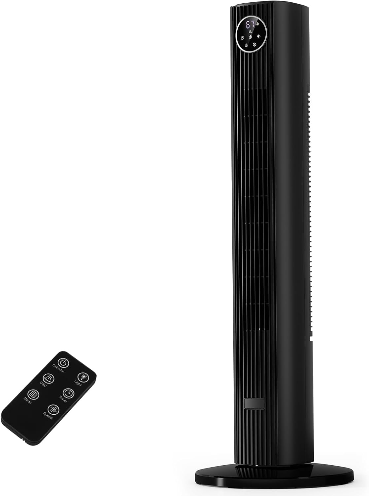
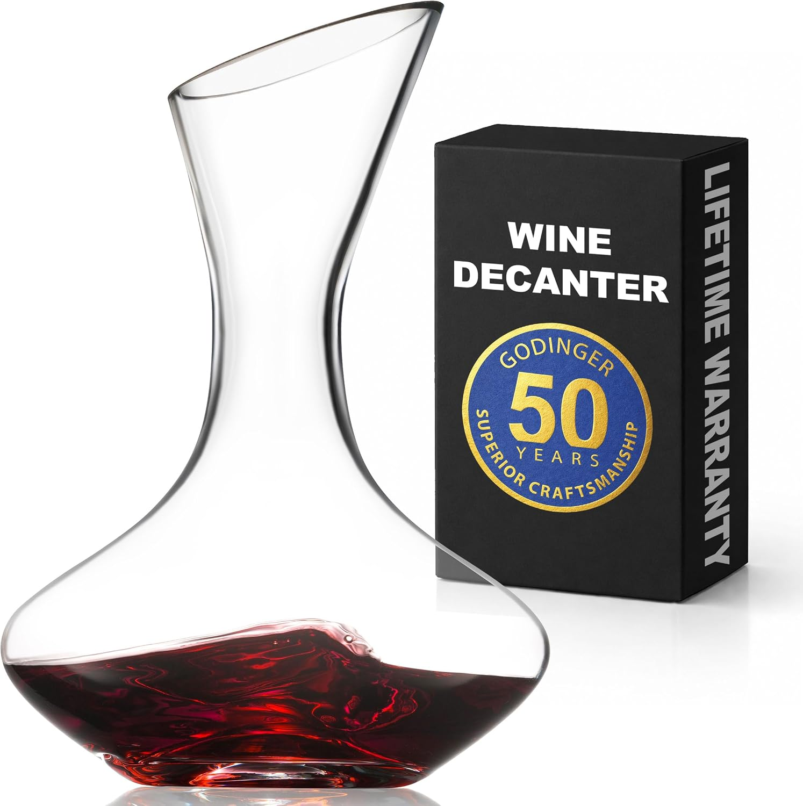
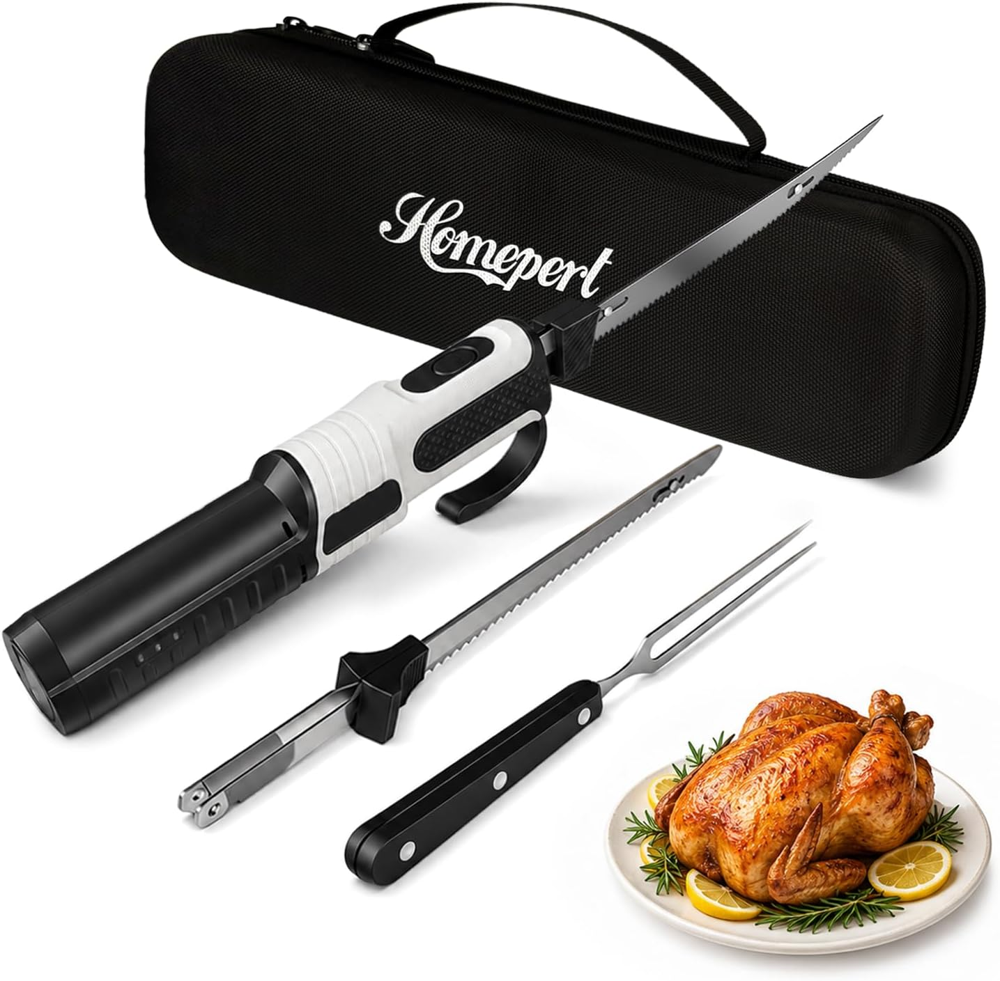
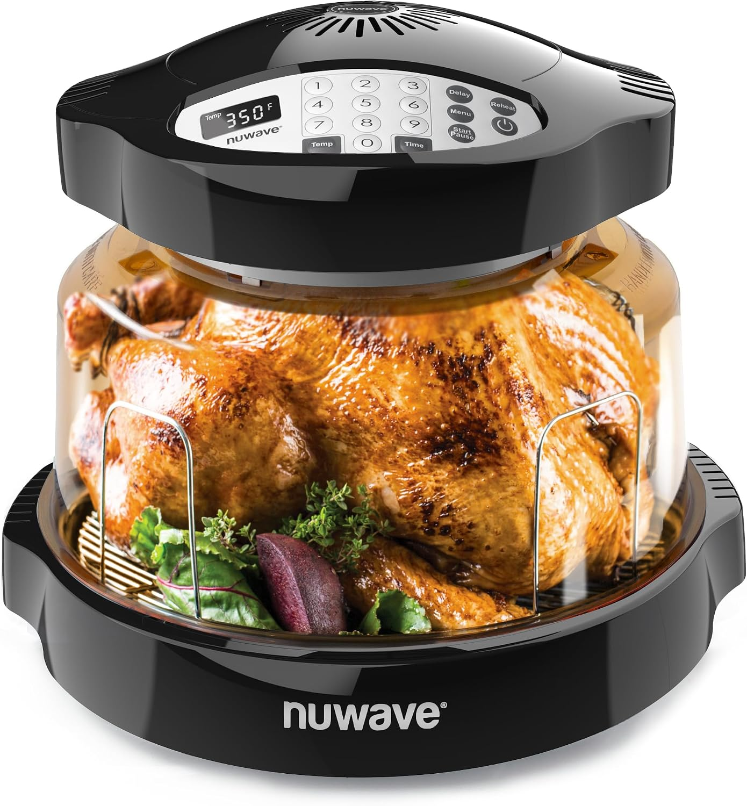
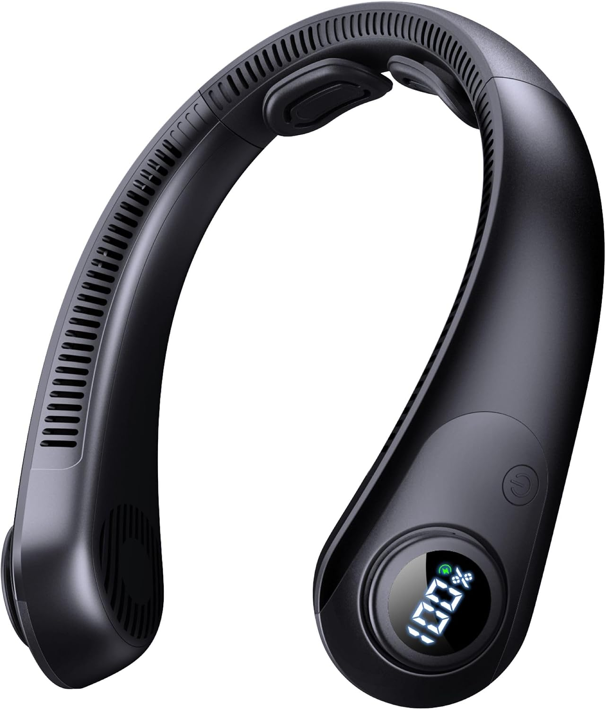

What Americans give vs. what they actually want — and where they overlap
Givers vs. Receivers — where they agree and where they don't
The golden rule of wedding gifts: always buy from the registry. Couples spend hours picking those items. Cash is now 60–70% of all wedding gifts — it's what they really want. 'Cute but impractical' decorative items often end up in the back of a closet.
Products that hit the sweet spot between what you want to give and what they'll love





Always check the registry first. Couples spend hours curating their registry. Buying off-registry is the single biggest wedding gift mistake. The KitchenAid mixer they registered for beats the expensive vase you picked out.
Cash is never tacky. 60–70% of wedding gifts are now cash or checks. Premium cookware sets and smart home starter kits are the most-loved physical alternatives to cash. A heartfelt card + cash = the perfect wedding gift.
Decorative items are the most regretted gift. 'Cute' home decor that doesn't match their style ends up in storage. If you must buy off-registry, make it consumable (wine, champagne, premium olive oil) or experiential.
Group gifts are perfectly acceptable. If the KitchenAid or a premium cookware set is out of your budget, coordinate with other guests. Couples would rather have one quality item than three small trinkets.
Never scramble for a last-minute gift again. We'll remind you 2 weeks early with curated picks.